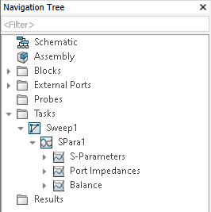

Simulation Task Results¶
As mentioned in the Results Guide of the 3D simulations, there are two ways to read the results. One is to extract the results from a running instance of CST Studio Suite. The other is to retrieve the results from the project files.
Please open the lumped-filter project from the previous section, and run these preparations:
import cst.interface
import cst.results
from pathlib import Path
import tempfile
from typing import Tuple
import numpy as np
project_dir = Path(tempfile.mkdtemp())
print(f"Working in temporary directory: {project_dir}")
de = cst.interface.DesignEnvironment.connect_to_any_or_new()
prj = de.active_project()
print("Accessing results from project ", prj)
assert 'lumped_filter_parameter_sweep' in prj.filename()
Some functions from previous sessions will be used here, so please run
def result1d_to_numpy(res: "interface.Project.Result1D") -> (np.ndarray, np.ndarray):
"""
converts Result1D object to numpy arrays of x(float) and of y(complex) values
"""
x = np.array(res.GetArray("x"))
y_complex = [complex(yre, yim) for yre, yim in zip(res.GetArray("yre"), res.GetArray("yim"))]
y = np.array(y_complex)
return x, y
def get_complex_max(x: np.ndarray, y: np.ndarray) -> (float, complex):
"""
returns the x and y values where y reaches its maximum value
"""
r_index = np.argmax(np.abs(y))
return x[r_index], y[r_index]
def get_complex_min(x: np.ndarray, y: np.ndarray) -> (float, complex):
"""
returns the x and y values where y reaches its minimum value
"""
r_index = np.argmin(np.abs(y))
return x[r_index], y[r_index]
Reading Results from a running CST Studio Suite instance¶
To read the results from our project, we need the resultIDs.
For this, we created the function get_result_id_names.
def get_result_id_names(prj: cst.interface.Project, task_path: str) -> list[Tuple]:
"""Gets all resultID names of the given task"""
child_names_ids = []
res_tree = prj.schematic.ResultTree
child = res_tree.GetFirstChildName(rf"Tasks\{task_path}")
while child != "":
child_names_ids.append((child, res_tree.GetResultIDsFromTreeItem(child)))
child = res_tree.GetNextItemName(child)
return child_names_ids
The function yields tuples of a tree_item and result_names of the tree_item.
It only checks inside the given “task_path”.
This is done, using the GetFirstChildName and GetNextItemName methods of the schematic.ResultTree Object.
The GetFirstChildName method, returns the first child tree item of the given navigation tree path.
GetNectItemName then returns the next tree item in the same level as the given tree item.
When calling the function for the tasks in the navigation tree shown below, the “task_path” should be “Sweep1\SPara1\S-Parameters”. In this case, we want to look at the S-Parameters.

The “result_names” returned from the get_result_id_names may include multiple names.
This occurs if the chosen task has multiple results.
For example, the parameter sweep has a result for each parameter combination.
The following code iterates through each result and gets the minimum and maximum values of the results.
def get_parameter_combination(prj: "cst.interface.Project", result_id: str) -> dict:
"""Returns the parameter combination associated with the result with the given result_id"""
import re
run_id_pattern = r".*:.*:(\d+)"
id_string = re.findall(run_id_pattern, result_id)
run_id_int = int(id_string[0])
project_name = prj.filename()
result_project = cst.results.ProjectFile(project_name, allow_interactive=True)
res_mod = result_project.get_schematic()
return res_mod.get_parameter_combination(run_id_int)
# continue with `prj`
#
for tree_item, result_names in get_result_id_names(prj, r"Sweep1\SPara1\S-Parameters"):
for result_name in result_names:
# get the parameter combination for this result
parameter_combi = get_parameter_combination(prj, result_name)
# get result object
result = prj.schematic.ResultTree.GetResultFromTreeItem(tree_item, result_name)
# Work with the results
np_results = result1d_to_numpy(result)
max_val = get_complex_max(np_results[0], np_results[1])
min_val = get_complex_min(np_results[0], np_results[1])
print(tree_item, result_name, "Max: ", max_val, "Min: ", min_val, "Parameters", parameter_combi)
Here we use helper functions that were created in the Results Guide of the 3D simulations.
These functions create numpy arrays from our results (result1d_to_numpy)
and return the min/max value of a given result array(get_complex_max/get_complex_min).
Using get_parameter_combination we retrieve the parameter combination for this result.
This is done by getting the “run_id” of the result and then passing it to GetParameterCombination.
The parameter combination includes all parameters, and not just the parameters that are changed during the parameter sweep.
Reading Results from files¶
To read the results without a running instance of CST Studio Suite we use the “cst.results” package.
# continue with `prj`
# define the project if it's opened in an Instance of CST Studio Suite
res_acc = cst.results.ProjectFile(prj.filename(), allow_interactive=True)
# get ResultModule from the project
res_schem = res_acc.get_schematic()
for tree_item in res_schem.get_tree_items():
# only check S-Parameters
if "S-Parameters" in tree_item:
run_ids = res_schem.get_run_ids(tree_item)
for run_id in run_ids:
result_item = res_schem.get_result_item(tree_item, run_id)
# Get Result Data as tuple (x, (yre,yim))
result = result_item.get_data()
# Get the results in separate lists
x = np.array(result_item.get_xdata())
y = np.array(result_item.get_ydata())
parameter_combi = res_schem.get_parameter_combination(run_id)
# Work with the results
max_val = get_complex_max(x, y)
min_val = get_complex_min(x, y)
print(
tree_item,
"; Run_ID: ",
run_id,
"Max: ",
max_val,
"Min: ",
min_val,
"Parameters",
parameter_combi,
)
This is done by defining the path to the project file that we want to read results from.
With the path we can create an instance of cst.results.ProjectFile.
Using this instance, we can create an instance of cst.results.ResultModule of our project.
The ResultModule allows us to use methods like get_tree_items()
to retrieve the items in the Task branch of the navigation Tree.
Another method we can use is get_run_ids to get the different “run_ids”
of the specific tree item we pass to the method.
Using a specific “run_id” we can retrieve the result item (get_result_item) and its parameter combination
(get_parameter_combination).
The result item lets us retrieve the values of the result.
For this we can use get_data to get the results as a list of tuples in the shape (x, (yre,yim)).
We can also use get_xdata and get_ydata to get the values in separate lists.
Now as mentioned before, we can use the functions created in the Results Guide of the 3D simulations to work with these results.